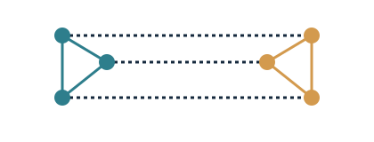
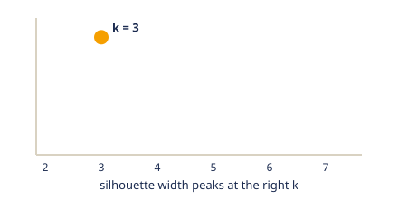

Short animations for the ideas behind MosaiClusteR. Each is a small vector graphic that loops, so it stays crisp at any size. Teal and amber mark two sources; blue and navy mark objects and results.
Integration paradigms
The five ways MosaiClusteR combines sources.
Direct integration
The sources are concatenated into one wide matrix and clustered once.
Fast and transparent (ADC, ADEC).
Similarity fusion
Each source gives an object-by-object similarity network. The
networks reinforce each other through cross-diffusion and converge to
one fused network (SNF).

Inside the algorithms
A closer look at two mechanisms that recur across the methods.
Choosing and checking the clusters
How many clusters are there? The average silhouette width rises to a peak at the number of clusters the data supports.

Data nuggets
For very large samples, the objects are first compressed into a few weighted representatives (nuggets). Feature weighting and clustering then run on the small set.
For the full method details, see the method comparison and the guides.